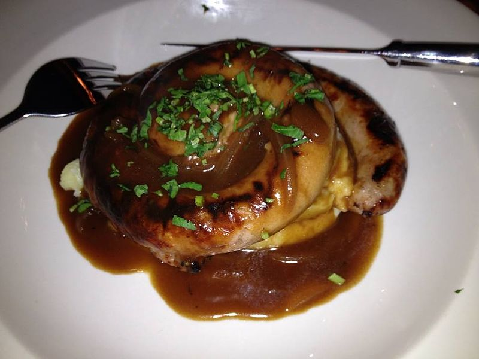

Bangers and Mash
Ingredients
- Potatoes ( 1kg )
- Thick Australian Beef Sausages ( 1 pack )
- milk ( 1l )
- butter ( 50g )
- Traditional Gravy pouch ( 50g )
- Salt ( 1 tsp )
Instructions
- Peel and cut potatoes in uniform shape, place in a saucepan and cover with salted cold water. Bring to the boil.
- Separate and prick sausages. BBQ or grill, turning regularly until thoroughly cooked.
- Check potatoes with a skewer. When easily inserted, drain water and mash cooked potatoes.
- Mix butter and milk at moderate temperature in a heat-proof dish. Slowly add to mash until desired texture achieved and season lightly.
- Cut the corner from traditional gravy and microwave pouch for 40 seconds.
- Pile the mashed potatoes on the plate with sausages and pour over the gravy.
Calories: 730
